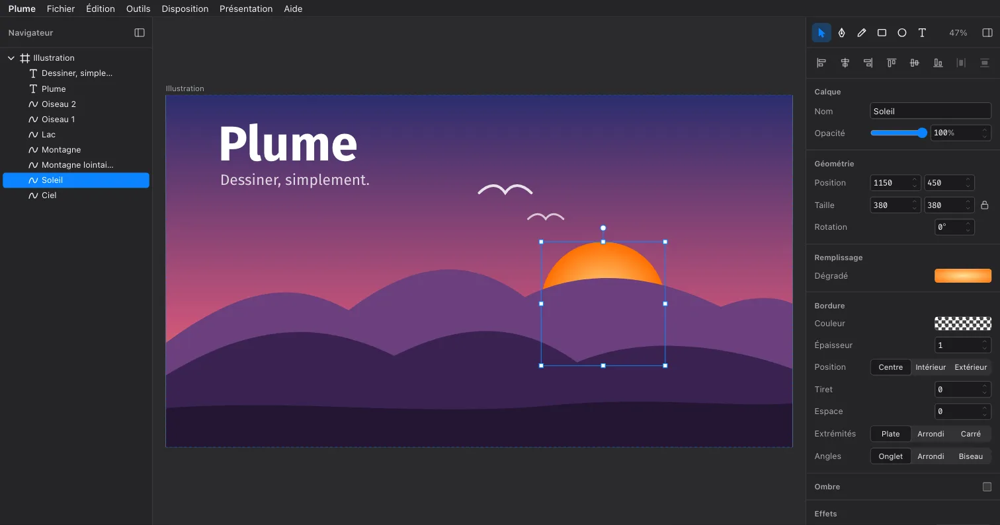
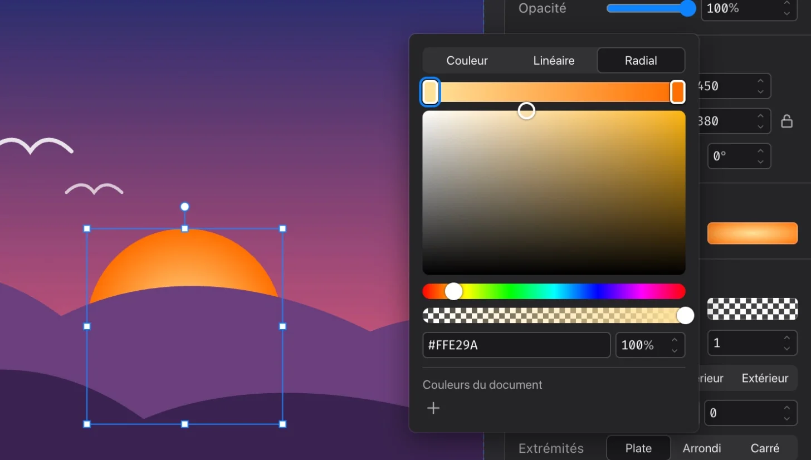

Un éditeur vectoriel simple, léger et libre.
Dessinez, retouchez vos SVG et exportez en PDF, PNG ou JPG. Gratuit, sans compte, sans abonnement : une application légère pour macOS et Linux, ou directement dans votre navigateur.

Tout l'essentiel, rien de plus
Les outils d'un éditeur vectoriel, pensés pour être compris tout de suite.
-
Formes, plume et crayon
Rectangles aux coins arrondis, ovales, tracés à la plume ou à main levée, lissés en courbes de Bézier.
-
Édition de points
Ajoutez, déplacez ou supprimez des points ; poignées miroir, asymétriques ou indépendantes.
-
Combiner des formes
Union, soustraction, intersection, différence : les courbes restent des courbes.
-
Plans de travail
Plusieurs pages ou vues dans un document, aux formats prédéfinis, exportés chacun dans son fichier.
-
Couleurs et effets
Dégradés linéaires et radiaux, bordures intérieures ou extérieures, pointillés, ombres, flou, couleurs du document.
-
Texte et polices
Texte sur une ligne ou en paragraphe, polices fournies ou installées, vectorisable en tracés.
-
SVG fidèle
Ouvrez, collez ou glissez un SVG : groupes, dégradés, masques, filtres et coins arrondis deviennent des calques modifiables.
-
Export PDF, SVG, PNG, JPG
Le document, chaque plan de travail ou la sélection, en 1×, 2× ou 3×, polices intégrées.
Des icônes prêtes à l'emploi
Dessinez une icône au trait, puis Vectoriser le contour la transforme en forme pleine : un seul tracé, sans bordure, comme l'attendent les bibliothèques et polices d'icônes.


Essayez sans rien installer
Plume tourne aussi dans le navigateur : le même éditeur, avec les mêmes outils. Il s'ouvre sur une illustration d'exemple, et Fichier › Exemples en propose d'autres. Vos dessins restent sur votre ordinateur, rien n'est envoyé nulle part.
Dans le navigateur, l'enregistrement et l'export passent par des téléchargements, et seules les polices fournies sont proposées. L'application de bureau ouvre et enregistre vos fichiers directement, et utilise les polices installées.
Ouvrir Plume dans le navigateur
Télécharger Plume {{version}}
macOS
{{mac}}Application non signée : au premier lancement, clic droit sur Plume.app, puis Ouvrir.
Linux
{{linux}}Gratuit, libre et ouvert
Licence MIT
Utilisez, modifiez et redistribuez Plume librement, y compris pour un usage commercial.
Code ouvert
Le code est sur GitHub : TypeScript et Svelte pour l'éditeur, Tauri pour l'application de bureau.
Contribuer
Signalez un problème ou proposez une idée dans les issues ; les pull requests sont les bienvenues.